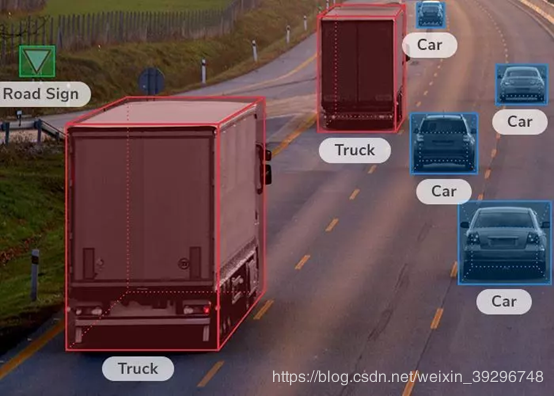
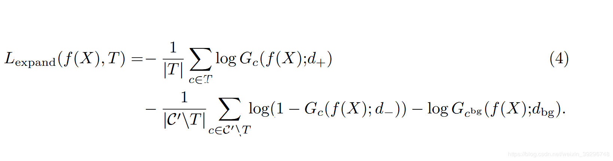

弱监督语义分割-SEC（seed、expand and constrain)的原理详述
时间：2020-3-2
摘要：本片博客是对弱监督语义分割领域的经典论文SEC的详细讲解。 更多弱监督语义分割论文笔记欢迎关注左侧公众号
一、简介
1.1、什么是弱监督语义分割
语义分割是AI领域的一个重要分支，被广泛应用于自动驾驶领域。近年来，深度学习为该领域带来了飞跃式的进展，然而这一进步依赖于大量全监督的标注数据。在语义分割领域，这意味着像素级别的标注（标注方式如下图，需要标注每一个像素属于哪一个类）。而像素级别的标注在获取时需要耗费大量的成本。弱监督语义分割是一种使用相对于像素级别的标注而言更容易获取的标注作为监督去训练语义分割模型的一种方式。

截至2020年，根据使用弱标注的不同，弱监督语义分割的研究大致可分为以下五个方向：
1)Box Bounding [1][2] :用一个矩形框标出目标物体的位置和标签
2)image level label [3][4]: 一张图片对应一个标签。如下图，标签为“猫”。
3)Point[5]: 用一个点标出目标物体的位置和标签。如下图的左图：
4)Scribble[6]: 用一个线标出目标物体的位置和标签。如上图的右图
5)上述四种方法的综合[7]: 利用各种弱标注的组合
上述五种方法与使用像素级的标签的ground truth作为监督相比，很明显，获取ground truth的时间与成本要更低。比如，CityScapes数据库，在精标条件下，一张图片的标注就需要1.5个小时。而一个bounding box方式的标注只需要7秒，而一个image-level tag的标注只需要1秒，按照这种方式，CityScapes数据库的标注时间将缩短30倍。这也是弱监督语义分割的最吸引人的点—使用更少的成本和时间，达到接近全监督语义分割的精度。
1.2、相关工作
1.2.1、CAM
这是2016年CVPR上提出的一种方法。这篇论文主要的观点在于用于图片分类任务的卷积神经网络实际上已经具有了在图片种定位目标物体位置的性质。这个怎么理解呢？我们先来看看这个网络的框架：

从上图，我们可以看到，实际上就是将图片分类任务的卷积神经网络的最后两层的全连接层替换为全局平均池化，这个池化后的得到的向量实际上代表着每一个通道上特征图的权重。随着训练的不断进行，权重也不断进行调整。当训练完毕之后，对应通道特征图乘以其对应得权重，之后，所有通道得通道图进行求和就会得到对应类别在原图中的大概位置（最具分辨力的位置，比如图中定位到的是这只澳大利亚的犬类的头部与尾部）
1.2.2、条件随机场（CRF）
条件随机场是一种计算当前点与其他点的相似程度从而更新当前点类别的方法，这种相似程度由颜色与距离等因素来衡量。具体可以参见这一篇博客。虽然里面讲解的是马尔可夫随机场，但是原理与处理过程与条件随机场一致，只是条件随机场中计算相似程度的方法与马尔可夫随机场有出入。
1.3、 SEC的motivation
1) 全监督语义分割ground truth获取费时费力；
2) 该篇文章之前使用image level进行弱监督的方法，分割效果不理想—无法预测对象的确切空间范围。
二、SEC原理
SEC的整个网络框架如下图所示：
如上图，SEC分为三个支路：
1) Weak Localization：实际上就是提前训练好的CAM网络（具体如何训练CAM的在论文最后的Supplementary material中有详细说明，具体而言就是训练用于多标签分类的网络）。原图通过CAM的处理之后的结果为下图形式
2) Segmentation CNN：原文中使用的是deeplab v1
3) CRF：这一条支路将原图下采样到与deeplab v1的输出特征图一样的大小，随后将二者送入条件随机场中进行处理
2.1、SEED LOSS
SEC中使用弱监督的是image level label。以上图为例，我们给原图打上的image level label为人和马。显然，image level label只能告诉我们图像里有什么而未明确提供有关图像中语义对象位置的任何信息。实际上这也是弱监督中最核心的问题—在没有像素级别的ground truth作为监督的情况下，如何精确的找到对应类别在图中的位置。
这篇paper的作者想到的办法是利用CAM这个方法的定位的能力来解决这一问题。虽然CAM的提出深度图像分类网络仅从图像级标签进行训练，定位信息通常不够精确，只能定位出对应类别的一部分特别具有判别力的区域，无法形成完整而准确的ground truth。 但是，这些定位信息对于指导弱监督的分割网络非常有用。 所以，作者提出了使用seed loss来鼓励神经网络仅预测匹配CAM定位信息给出的区域，而忽略图像的其余部分。换言之，seed loss的作用在于让神经网络在CAM定位出的seed region上尽可能与CAM给出的这一区域的类别一致。Seed loss可以表示为以下公式：
# seed_loss
class Seed_loss(nn.Module):
def __init__(self):
super(Seed_loss, self).__init__()
def forward(self, output,cues):
count = cues.sum(axis=(1, 2, 3), keepdims=True)
loss = -torch.mean(torch.sum(cues * torch.log(output), axis=(1, 2, 3), keepdims=True) / count)
return loss
2.2、Expanding LOSS
# Expand_loss
class Expand_loss(nn.Module):
def __init__(self):
super(Expand_loss, self).__init__()
self.maxpooling = nn.AdaptiveMaxPool2d((1, 1))
def forward(self, output,labels):
stat = labels[:, 1:]
probs_bg = output[:, 0, :, :]
probs = output[:, 1:, :, :]
probs_max = self.maxpooling(probs)
# print(stat.shape,probs_bg.shape,probs.shape,probs_max.shape)
q_fg = 0.996
probs_sort = torch.sort(probs.view(-1,20,41*41),dim=2).values
weights = torch.Tensor(np.array([q_fg ** i for i in range(41*41 -1, -1, -1)]))
weights = weights.view(1,1,-1)
#print(probs_sort[0][1],weights)
Z_fg = torch.sum(weights)
probs_mean = torch.sum((probs_sort * weights) / Z_fg, axis=2)
q_bg = 0.999
probs_bg_sort = torch.sort(probs_bg.view(-1,41*41),dim=1).values
weights_bg = torch.Tensor(np.array([q_bg ** i for i in range(41 * 41 - 1, -1, -1)]))
weights_bg = weights_bg.view(1,-1)
Z_bg = torch.sum(weights_bg)
probs_bg_mean = torch.sum((probs_bg_sort * weights_bg) / Z_bg, axis=1)
loss1 = -torch.mean(torch.sum(stat * torch.log(probs_mean)/torch.sum(stat,dim=1,keepdim=True),dim=1))
loss2 = -torch.mean(torch.sum((1-stat) * torch.log(1-probs_max) / torch.sum((1-stat),dim=1,keepdims=True), dim=1))
loss3 = -torch.sum(torch.log(probs_bg_mean))
return loss1 + loss2 + loss3
2.3、Constrain Loss
# Constrain_loss
class Constrain_loss(nn.Module):
def __init__(self):
super(Constrain_loss, self).__init__()
def forward(self, output,crf):
probs_smooth = torch.exp(crf)
loss = torch.mean(torch.sum(probs_smooth * torch.log(probs_smooth / output), dim=1))
return loss
三、如何使用SEC对图片进行分割
SEC训练完毕后在测试阶段对图片进行分割预测的流程如下图：
引用
1.CVPR_2018: Simple Does It_Weakly Supervised Instance and SemanticSegmentation ↩︎
2.ICCV_2015：Exploiting Bounding Boxes toSupervise Convolutional Networks for Semantic Segmentation ↩︎
3.CVPR_2015:From Image-level to Pixel-level Labeling withConvolutional Networks ↩︎
4.ECCV_2016: Built-in Foreground/Background Prior for Weakly-SupervisedSemantic Segmentation ↩︎
5.ECCV_2016: What’s the Point: Semantic Segmentation with PointSupervision ↩︎
6.CVPR_2016: ScribbleSup: Scribble-Supervised Convolutional Networks forSemantic Segmentation ↩︎